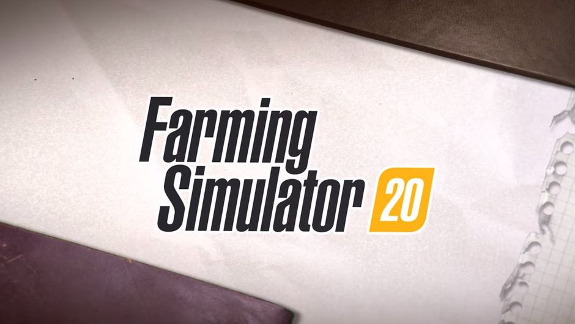

Detect Crop Diseases
फसल रोगों का पता लगाएं
AI की मदद से अपने खेत, मिट्टी और मौसम के अनुसार सबसे उपयुक्त फसल जानें।
शुरू करें →
🌾
Get AI-powered crop recommendations, soil analysis, weather updates and market insights — all in one place.
Powerful AI tools designed to make farming decisions easier, smarter and more profitable.
AI की मदद से अपने खेत, मिट्टी और मौसम के अनुसार सबसे उपयुक्त फसल जानें।
शुरू करें →अपनी मिट्टी की गुणवत्ता, पोषक तत्वों और उपयुक्त फसल की जानकारी प्राप्त करें।
जाँच करें →अपने क्षेत्र का सटीक मौसम पूर्वानुमान पाएं और समय पर सही निर्णय लें।
देखें →फसल के ताजा मंडी भाव और बाजार रुझानों की जानकारी पाएं।
जानें →Build a living farm profile, test what-if scenarios and see soil, weather, water, disease and market signals in one risk view.
A persistent farm profile that updates with farmer, soil, crop, sowing, weather and monitoring data.
Open Digital Twin →
Explore rainfall, temperature, water, soil-pH and crop-change scenarios without making the decision for the farmer.
Run a Scenario →See combined risk signals for soil, weather, water, disease and market with clear next monitoring actions.
Open Risk Radar →One platform for planning, schemes, disaster support and long-term weather intelligence.
Find official farmer schemes, crop insurance and market resources with direct government links.
Explore schemes →Step-by-step guidance after flood, drought, hailstorm or other notified crop-loss events.
Get guidance →Compare multi-year temperature and rainfall patterns for a farm location using Open-Meteo.
Analyze history →Turn crop, soil, water and season inputs into a simple checklist for the next farming steps.
Build my plan →Smart Crop Advisor combines agricultural knowledge, AI technology, soil information, weather data and market insights to help farmers make better decisions.
Make smarter farming decisions with AI.